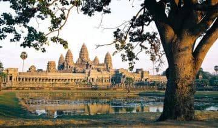

- Siem Reap
- Pailin
- Battambang
- Pursat
- Banteay Meanchey
- Oddar Meanchey
- Preah Vihear
- Kampong Thom
- Kampong Chhnang
- Kampongcham
- Stung Treng
- Ratanakiri
- Mondulkiri
- Kratie
- Tbongkhmum
- Preyveng
- Svay Rieng
- Kandal
- Phnom Penh
- Takeo
- Kampong Speu
- Kampot
- Kep
- Preah Sihanouk
- koh kong


Siem Reap Travel Guides
General Information
Siem Reap province is located in northwest Cambodia. It is the major tourist hub in Cambodia, as it is the closest city to the world famous temples of Angkor (the Angkor temple complex is north of the city). The provincial capital is also called Siem Reap and is located in the South of the province on the shores of the Tonle Sap Lake, the greatest sweet water reserve in whole Southeast Asia. The name of the city literally means Siamese defeated, referring to the victory of the Khmer Empire over the army of the Thai kingdom in the 17th century.
At the turn of the millennium Siem Reap was a Cambodian provincial town with few facilities, minor surfaced roads and little in the way of nightlife. Tourism industry catered largely to hardy backpackers willing to brave the tortuous road from the Thai border on the tailgate of a local pick-up truck. There were a couple of large hotels and a handful of budget guesthouses. Tuk-tuks and taxis were non-existent and the trusty motodup was the chosen means of touring the temples of Angkor.
The proximity of the Angkorian ruins turned Siem Reap into a boomtown in less than half a decade. Huge, expensive hotels have sprung up everywhere and budget hotels have mushroomed. Property values have soared to European levels and tourism has become a vast, lucrative industry. The Siem Reap of today is barely recognizable from the Siem Reap of the year 2000.
Though some of the town's previous ramshackle charm may have been lost the developments of the last few years have brought livelihoods, if not significant wealth, to a good number of its citizens. This has been at a cost to the underprivileged people living within and beyond the town's limits that now pay inflated prices at the central markets and continue to survive on poorly paid subsistence farming and fishing. If Cambodia is a country of contrasts Siem Reap is the embodiment of those contrasts. Despite the massive shift in its economic fortunes, Siem Reap remains a safe, friendly and pleasant town. There is an endless choice of places to stay or dine and a host of possible activities awaiting the visitor.
Trip to Siem Reap Angkor in Cambodia
Geography
Siem Reap province is 10,299 square kilometres big and definitely one of the most famous ones in Cambodia. It's located in the Northwest of the country bordering to the North with Oddor Meanchey, to the East with Preah Vihear and Kampong Thom, to the West with Banteay Meanchey and to the South with the biggest sweet water reserve in Southeast Asia, the huge Tonle Sap Lake.
The province in general, especially in the Southern part consists of the typical plain wet area for Cambodia, covering lots of rice fields and other agricultural plantations. The northern part is turning into an undulating area covered with some deeper, green forests. A quite distinguished mark of Siem Reap Province is the smaller, but important Siem Reap River. It rises from Phnom Kulen, meanders through the northern part of Siem Reap Province and eventually into the Tonle Sap Lake.
Population
The current population in this province is about 903,030 people or 6.3% of the country's total population (14,363,519 person in Cambodia, 2007, provincial government data), with 440,395 male and 462,635 female. The population density is therefore 87,7 people per square kilometre.
Climate
The country has a tropical climate - warm and humid. In the monsoon season, abundant rain allows for the cultivation of a wide variety of crops. This year-round tropical climate makes Cambodia ideal for developing tourism. Travellers need not to fear natural disasters such as erupting volcanoes or earthquakes, and the country is not directly affected by tropical storms.
Climate: Cambodia can be visited throughout the year. However, those plans to travel extensively by road should be avoided the last two months of the rainy season when some countryside roads may be impassable. The average temperature is about 27 degrees Celsius; the minimum temperature is about 16 degrees. December and January are the coolest months, whereas the hottest is April. General information about the provincial climate:- Cool season: November- March (23-29c)
- Hot season: March- May (27c -37c)
- Rainy season: May - October (24-33c, with humidity up to 90%.)
Economy
Generally spoken Siem Reap Province is all in all economically focusing on the foreign tourism due to the famous Angkor Temples. Since of the year 2000 the economical growth rate is gaining double-digits. It's all sub-sectors such as hotels, restaurants, bars, entertainment places and transportation to profit from the annual influx of tourists, which was in 2007 more than 1,000,000 people.
Except the tourism sector the provincial economy was and still is growing due to the enforced fishery. Thousands of tons are annually exported to other provinces within the country or outside Cambodia. Farming and fruit cropping has probably become a minor profitable sector, but is still done by the vast poor rural population, who are the underdogs regarding the annual provincial revenue.